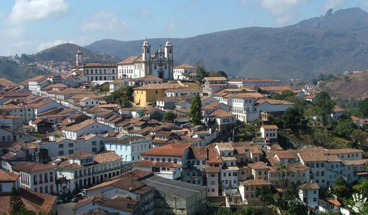

БРАЗИЛИЯ
БЮДЖЕТ: 13 000$
Перелёт(в обе стороны):
Кропивницкий - Киев(400 хривен)
Киев - Милан (121 евриков)
Милан - Сан - Пауло (360 евриков)
Рио - де - Жанейро

Сан - Паулу

Ору - Прету
Сегодня Рио — второй по величине город Бразилии с захватывающими дух пейзажами, развитой пляжной культурой и, конечно, знаменитым ежегодным карнавалом. Уникальная «рекоподобная» гавань Рио известна горой Сахарная голова и пиком Коковардо, а также холмами Тижука. Все это делает ее одним из природных чудес света.
Крупнейший город Южноамериканского материка и всего Южного полушария. Мегаполис распростерся на плато, являющегося частью Бразильского нагорья, высота которого над уровнем моря составляет 800 м. Плато лежит в 70 км от Атлантического океана и в 430 км южнее Рио-де-Жанейро.
В переводе с португальского название Ору-Прету означает «черное золото». В 17 веке в этой местности были обнаружены большие месторождения этого металла.Ору-Прету был первым бразильским городом, объявленным культурным наследием человечества.
Полина (Рио - де - Жанейро)
1 день
- После прибытия в Галеан мы добираемся до Музея Будущего с помощью автобуса
- За пол часа доходим до Rio Scenarium, чтобы покушать(Риззото 11$)
- Затем пешком (40 минут) любуясь красотами добираемся до Лапы
- В этом районе за три минуты доходим до Лестницы Селарона
2 день
- С помощью метро за пол часа добираемся до пляжа Копакабана (4.6$)
- За пол часа доходим до Confetiaria Colombo(cалат за 2$)
- Также на метро швиденько возвращаемся домой
- Ужинаем в Restaurante Dalapa(белый рис за 1.6$, крокеты - 2$)
3 день
- С пересадками(434 автобус - 582 автобус) добираемся до Пан - ди - Асукара
- За полчаса добираемся до Terra Brasilis(BBQ за 9$)
- За пол часа доходим пешком до Mureta da Urca
- За 10 минут доходим до Красного пляжа а потом додому на автобусе
Полина (Рио - де - Жанейро)
Прибытие(03.07 - ):
Рио - де - Жанейро из Сан - Пауло(165$/ 10:10-11:15)
Проживание(03.07 - 05.07):
Hotel Atlantico Prime(150$/2 ночи)
- Переезд в Ору - Прету:
- В 17:06 садимся на 351 автобус(едем 2 остановки)
- Пересадка на Novo Rio Bus Terminal в 17:30
- 21:50 остановка в Rio Pomba - MG
- Пересадка нa Belo Horizonte Bus в 00:25
- Остановка в Terminal Rodoviário de Belo Horizonte
- В 6:00 пересадка на Ouro Preto Bus
- Конечная остановка в 7:50 в Ouro Preto
Section 3
This is section 3